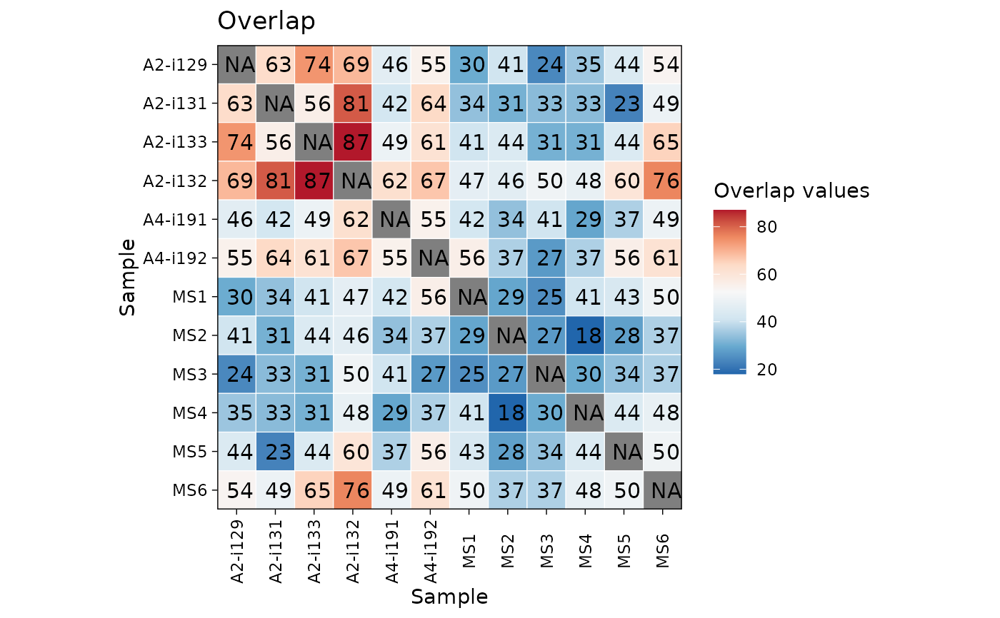
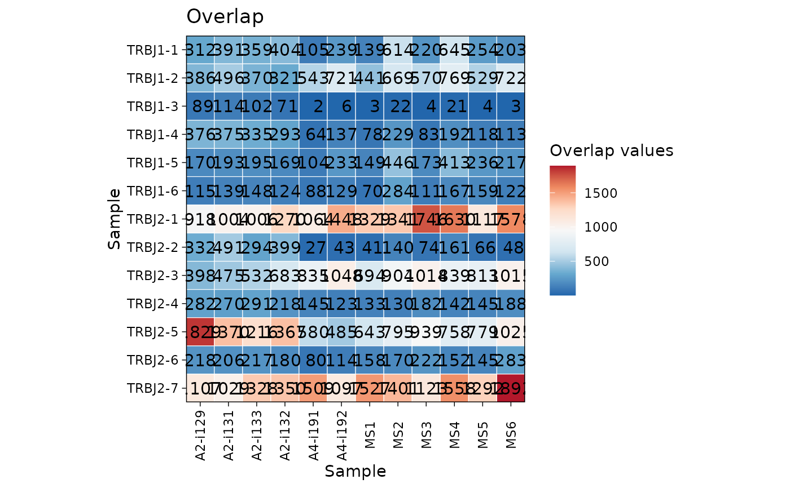

Visualisation of matrices and data frames using ggplo2-based heatmaps
Source:R/v0_vis.R
vis_heatmap.Rd![[Deprecated]](figures/lifecycle-deprecated.svg)
Fast and easy visualisations of matrices or data frames with functions based on the ggplot2 package.
Usage
vis_heatmap(
.data,
.text = TRUE,
.scientific = FALSE,
.signif.digits = 2,
.text.size = 4,
.axis.text.size = NULL,
.labs = c("Sample", "Sample"),
.title = "Overlap",
.leg.title = "Overlap values",
.legend = TRUE,
.na.value = NA,
.transpose = FALSE,
...
)Arguments
- .data
Input object: a matrix or a data frame.
If matrix: column names and row names (if presented) will be used as names for labs.
If data frame: the first column will be used for row names and removed from the data. Other columns will be used for values in the heatmap.
- .text
If TRUE then plots values in the heatmap cells. If FALSE does not plot values, just plot coloured cells instead.
- .scientific
If TRUE then uses the scientific notation for numbers (e.g., "2.0e+2").
- .signif.digits
Number of significant digits to display on plot.
- .text.size
Size of text in the cells of heatmap.
- .axis.text.size
Size of text on the axis labels.
- .labs
A character vector of length two with names for x-axis and y-axis, respectively.
- .title
The The text for the plot's title.
- .leg.title
The The text for the plots's legend. Provide NULL to remove the legend's title completely.
- .legend
If TRUE then displays a legend, otherwise removes the legend from the plot.
- .na.value
Replace NA values with this value. By default they remain NA.
- .transpose
Logical. If TRUE then switch rows and columns.
- ...
Other passed arguments.
Examples
# \dontrun{
data(immdata)
ov <- repOverlap(immdata$data)
vis_heatmap(ov)

gu <- geneUsage(immdata$data, "hs.trbj")
vis_heatmap(gu)

# }